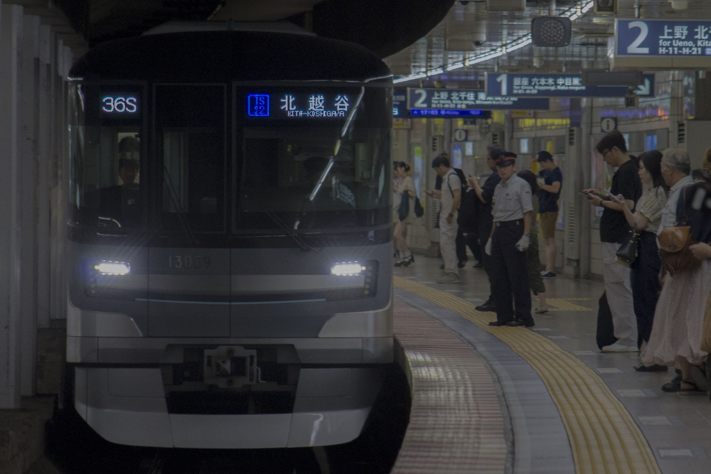
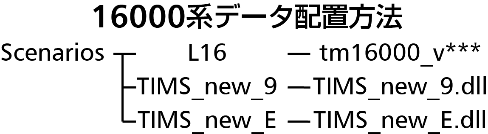

BVE5 東京メトロ13000系
 v1.0公開：2020年4月1日v1.1公開：2023年4月1日（予定）
はじめに
13000系は、元は16000系からのバリ展がしやすいことより作り始めただけのものでしたが、日比谷線データの限定公開などを経て、13000系の独自性を出そうと音声やパネルを再取材、その上で出来上がった作品となります。 今回、kikuike様に専用プラグインを製作していただき、独特のグラスコックピットを完全再現することができました。先代とまるっきり違う運転台をお楽しみください。データについて
このデータはインバータ装置の素子がSiC化される前の前期車を再現しております。推奨路線
海芝様作東武伊勢崎線、vertah様作東京メトロ日比谷線を推奨しております。Special thanks
- わかめ太郎様・ニッシー様 アドバイスをいただきました。
- あすく様 各種プラグインを使用させていただきました。
- 高橋うさお様 メトロ総合プラグインを使用させていただきました。
- りんくす様 motor音を製作していただきました。
- 21854F様 音素材を提供いただきました。
- mackoy様 BVEを製作されました。
ファイル配置・注意等
このデータを使用するには、専用のTIMSプラグインをダウンロードする必要があります。「メトロ用」を導入してください（小田急用は不要です）。
TIMSプラグインは当方Pluginページで公開しております。
また、運転動画等は無改造・最新版のものを使用してください。旧版のものでの運転動画の撮影は禁止します。
ダウンロード
現在はできません。公開までお待ちください。追記（2023/02/18）：素材等の許可を取り、一通りめどが立っております。今後、走行音等の改良を行ったうえで、正式公開の予定です。 公開までしばらくお待ちください。
ダウンロード